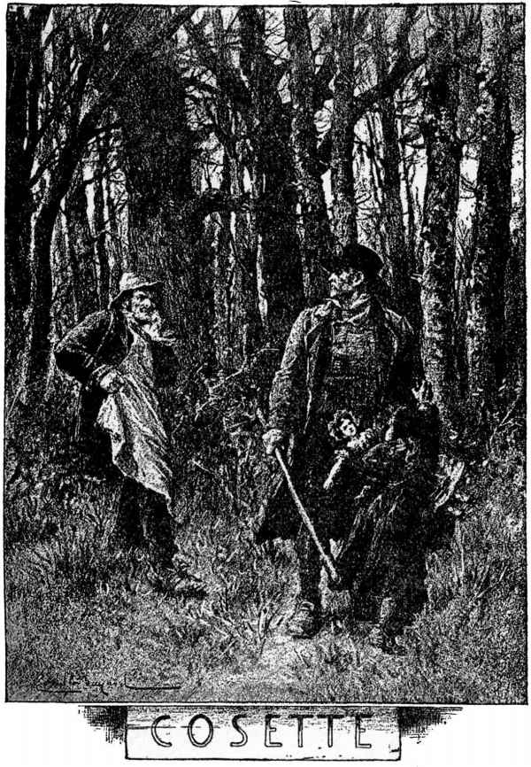
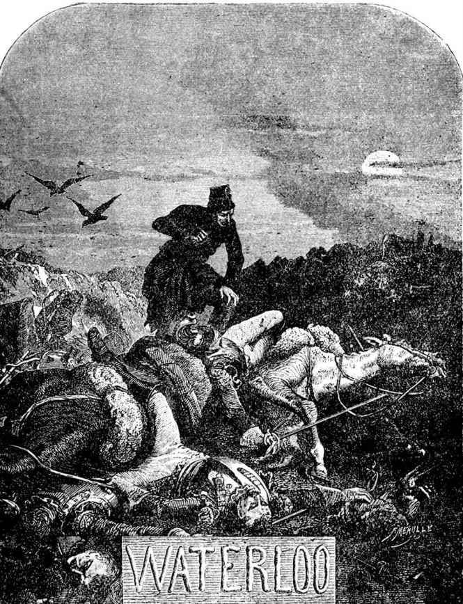

珂赛特

去年（一八六一），在五月间一个晴朗的早晨，有一个行人，本故事的叙述者，到了尼维尔[1]，并向拉羽泊走去。他步行。他沿着山冈上两行树木中间的一条铺了路面的大道前进。那大道随着连绵不断的山冈，一起一伏，犹如巨浪。他已经走过了里洛和伊萨克林。向西望去，他可以辨出布兰拉勒[2]的那座形如覆盆的青石钟楼。他刚刚走过一处高地上的树林，看见有一根蛀孔累累的木柱，立在一条横路的转角处，那柱子上面写着“第四栅栏旧址”；旁边，有一家饮料店，店面墙上的招牌写着“艾侠波四风特等咖啡馆”。
从那咖啡馆再往前走八分之一法里，他便到了一个小山谷的底里，谷底有一条溪流，流过路下的涵洞。疏朗翠绿的树丛，散布在路旁山谷里，在路的另一面，树丛散乱有致地展向布兰拉勒。
路的右边，有一家小客店，门前摆着一辆四轮小车、一大捆蛇麻草和一个铁犁，青树篱边，有一堆干刍，在一个方坑里，石灰正冒着气，一张梯子卧倒在一个用麦秆作隔墙的破棚子的墙边。田里有个大姑娘在锄草，一大张黄色广告，也许是什么杂技团巡回演出的海报，在田边迎风飘动。在那客店的墙角外面，有一群鸭子在浅沼里游行，一条路面铺得很坏的小道沿着那浅沼伸入丛莽。那行人向丛莽中走去。
他走上百来步，到了一道十五世纪的墙脚边，墙上有用花砖砌的山字形尖顶，沿墙过去，便看见一扇拱形石库大门，一字门楣，配上两个圆形浮雕，具有路易十四时代的浑厚风格。大门的上方便是那房屋的正面，气象庄严，一道和房屋正面垂直的墙紧靠在大门旁边，构成一个生硬的直角。门前草地上，倒着三把钉耙，五月的野花在耙齿间随意开着。大门是关着的。双合门扇已经破烂，一个旧门锤也生了锈。
日光和煦宜人，树枝在作五月间那种轻柔的颤动，仿佛来自枝上的鸟巢，而不是由于风力。一只可爱的小鸟，也许是怀春吧，在一株大树上尽情啼唱。
过客弯下腰去细察门左石脚上的一个圆涡，圆涡颇大，好像是个圆球体的模子。正在这时，那双合门扇开了，走出来一个村姑。
她望着过路客人，看见了他正在细看的东西。
“这是一颗法国炮弹打的。”她向他说。
随后她又接着说：
“稍高一点，在这大门的上面，那颗钉子旁边，您看见的是一个大铳打的窟窿。铳子并没有把木板打穿。”
“这叫什么地方？”过客问道。
“乌古蒙。”村姑说。
过客抬起头来。他走了几步，从篱笆上面望去。他从树枝中望见天边有一个小丘，丘上有一个东西，远远望去，颇像一只狮子。[3]
[1] 尼维尔（Nivelles），比利时城市，在布鲁塞尔和滑铁卢的西南面，距布鲁塞尔三十多公里。
[2] 布兰拉勒（Braine-l’Alleud），地名，在滑铁卢和尼维尔之间。
[3] 那是滑铁卢战场上的纪念墩，墩上有个铜狮子，是英普联军在击溃拿破仑后建立的。